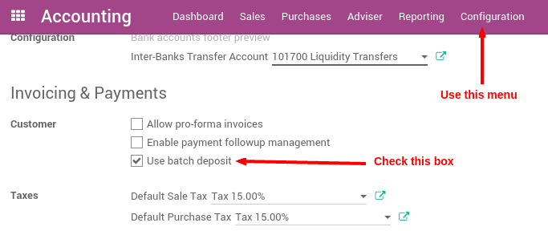
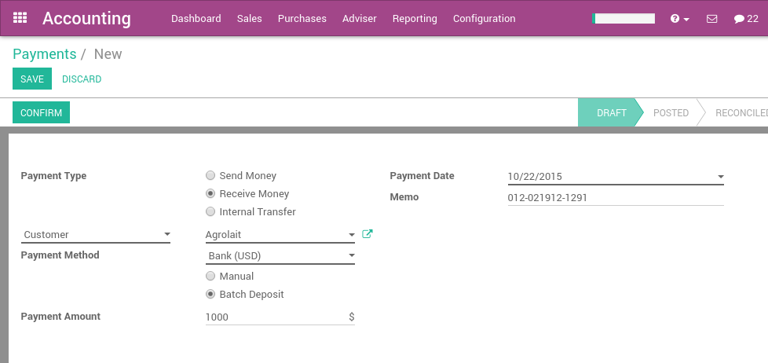

When your company's collections group receives checks from customers they will often place this money into their bank account in batches. As this money has been received in a physical form, someone in your company must manually bring the checks to the bank.
The bank will ask for a deposit ticket (also referred to as deposit slip) to be filled-in with the details of the checks or cash to be included in the transactions.
The bank statement will reflect the total amount that was deposited and the reference to the deposit ticket, not the individual checks.
Odoo assists you to prepare and print your deposit tickets, and later on reconcile them with your bank statement easily.
Configuration
Install the batch deposit feature
In order to use the batch deposit feature, you need the module Batch Deposit to be installed.
Примечание
Usually, this module is automatically installed if checks are widely used in your country.
To verify that the Batch Deposit feature is installed, go to the menu of the accounting application. Check the feature: Allow batch deposit.
Activate the feature on your bank accounts
Once you have installed this feature, Odoo automatically activate bank deposits on your main bank accounts.
To control which bank account can do batch deposit and which can not, go to the journal that you defined to pay your checks, usually called 'Checks' or 'Bank' (see How to register customer payments by checks?, in the Accounting apps, .
In Advanced Settings tab, in section Miscellaneous, set Debit Method to Batch Deposit.

If you check Batch Deposit in your debit method field, it means that payments created using this Journal (called Payment method when you want to make or receive a payment) will be applicable for the creation of Batch Deposits afterwards.
From checks received to the bank
Receive customer checks
Once your record checks received, record them on the bank account on which you plan to deposit them. Once you select the bank account (or check journal is you configured Odoo that way), Odoo proposes you to use a batch deposit. Select this option if you plan to deposit the check to your bank.
In the memo field, you can set the reference of the check.
Примечание
payments can be registered from the menu , or directly on the related invoice, using the Register Payment button.
Prepare a batch deposit
From the Accounting application, go to the menu , and create a new Batch Deposit.

Select the bank, then select the payments (checks) you want to add in this deposit. By default, Odoo proposes you all the checks that have not been deposit yet. That way, you can verify that you do not forget or lost a check.

You can then print the batch deposit, which will be very useful to prepare the deposit slip that the bank usually requires to complete.
Reconciling the Deposit with the Bank Statement
When you process the bank statement reconciliation you will see the deposit ticket number referenced in the statement. When the reconciliation process is run, the user will be able to select the batch deposit that matches with the bank statement line.

If you select a batch deposit, Odoo will automatically fills all the checks contained in this deposit for the matching. (2 checks were in this batch deposit the example below)

Troubleshooting
I don't see the batch deposit link on bank statements?
If you don't have a batch deposit link in your bank statement, there could be two reasons:
- After having installed the batch deposit features, you need to reload the page so that the browser is aware of this new feature. Just click the reload button of your browser.
- You do not have a batch deposit created for this bank account.
What happens if a check was refused?
If you have a smaller amount in your bank statement than the actual amount in your batch deposit, it probably means that one of your check has been refused.
In this case, click on the line related to this check to remove it from the bank statement matching.